1 November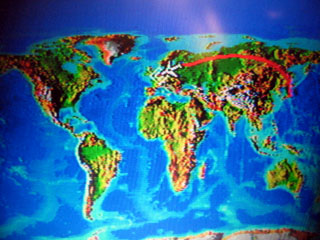 Na een heerlijke nacht in het hotel op Narita Airport de laatste 12 uur van de reis doorgebracht in de JAL 747 naar Amsterdam, samen met het complete Andre Rieu Orkest.Nu dus weer thuis en daarmee de weblog (met vertraging) afgesloten. |
31 October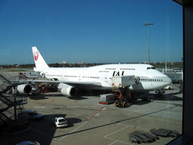 Vroeg opgestaan en ingechecked op het vliegveld. De koffer met versterker gaf niet eens problemen bij de veiligheids check. De vlucht naar Tokyo was weer uitstekend, alleen was er helaas vooral water te zien vanaf mijn raamplaats. Soms toch ook wat interessants. |
30 October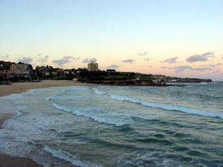 Met de bus naar Sydney vertrokken en met een heerlijk diner genoten van de laatste avond voor de grote terugreis. |
29 October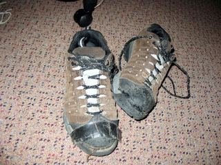 Weer terug in Canberra en meteen de schoenen die me (met wat plakwerk) niet in de steek hadden gelaten maar in de prullenbak gedumpt. Weer een paar gram minder voor de bagage... |
28 Oktober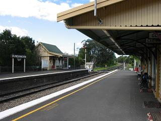 Na een wandeling door het kleine dorp ben ik weer op een van de twee treinen die hier per dag komen gestapt, in de richting van mijn eindstation: Canberra. Op het station van Bundanoon was ik de enige die stond te wachten op de trein.In Canberra is alles in vijf weken tijd groen geworden. Wel is het er nog steeds behoorlijk koud, vergeleken met waar ik vandaan kom. |
27 Oktober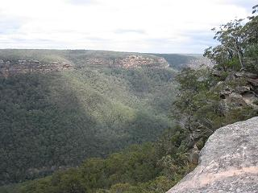 Om 04 uur opgestaan om de eerste trein vanuit Sydney naar Bundanoon, een heel klein plaatsje in de Southern Highlands, te halen. Dat is gelukt, maar vanwege een zware storm was het te gevaarlijk om door het bos van het Morton National Park te lopen omdat er allerlei hout omlaag kwam. Het dus maar bij een mooi uitzicht gehouden en de rest van de dag een goed boek gelezen. |
26 Oktober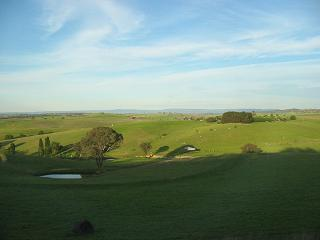 Voor de verandering maar weer een dag in de trein. Ongeveer 900 km in 12 uur dit keer, van Broken Hill naar Katoomba. Ineens werd daar het landschap weer groen. Iets wat ik al een hele tijd niet meer gezien had. |
25 Oktober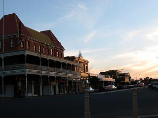 De laatste dag in Broken Hill besteed aan het verkennen van het stadje zelf. Er leven een boel kunstenaars, en dat is te zien aan de enorme hoeveelheid galerieen. Er waren erg mooie schilderijen bij. |
24 Oktober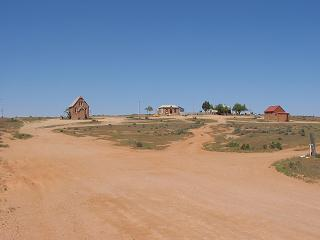 De omgeving van Broken Hill leeft van de zilver mijnen. Een verlaten "Spookstadje" genaamd Silverton is het decor geweest van verschillende films, waaronder Mad Max, Prescilla Queen of the Desert en Mission Impossible. Dit verlaten gehucht vandaag bezocht en ook nog even ondergronds in een zilvermijn gekeken. |
23 Oktober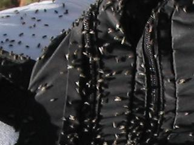 Een ding dat niet zo aantrekkelijk aan de Outback is, zijn de vliegen. Vandaag met een Koreaanse hostel gast 13 km heen en terug naar een heuvel met rots sculpturen gelopen (goed om de benen even te strekken na de 26 uur in de trein de afgelopen twee dagen), waar we voortdurend omringd waren door een enorme wolk met vliegen. Bijzonder irritant, maar je doet er echt niets aan. De sculpturen en vooral de omgeving waren schitterend. |
22 Oktober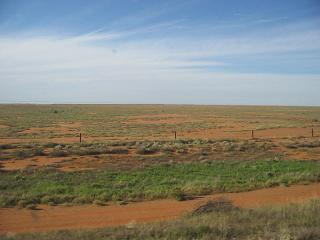 Na een kort veblijf van slechts 50 minuten in Adelaide, vertrokken op de volgende lange-afstands trein: de Indian Pacific naar Broken Hill, nog eens ca 600 km. Het landschap tijdens deze rit was meer hoe ik verwacht had van het binnenland hier. In tegenstelling tot het gebied rond Alice Springs kon je hier soms echt beide horizons zien zonder een enkele boom in zicht. Erg indrukwekkend. |
21 Oktober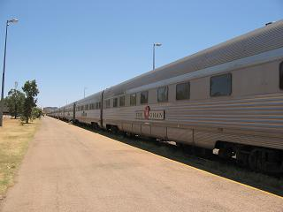 Alice Springs verlaten aan boord van de Ghan trein, waarvan het einde echt niet te zien was. Ook deze trein was niet de snelste, maar dat kwam goed uit voor het maken van fotos onderweg. Ik begin te wennen aan slapen in de trein, wat deze keer aardig goed lukte. |
20 Oktober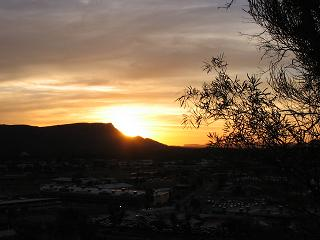 Een rustige dag om bij te komen van de tour vandaag. In de ochtend naar het oude telegraaf station van Alice Springs, waar het allemaal begon, gelopen. In de avond van het uitzicht over het stadje vanaf Anzac Hill genoten. |
19 Oktober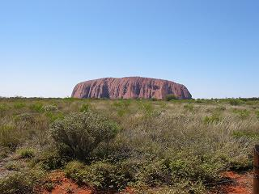 Voor de verandering nu maar eens om 04 uur opgestaan om optijd op het zonsopgang uitzichtspunt voor die rots te zijn (samen met honderden andere toeristen...). De zonsopgang over Ayers Rock was, nou ja, gewoon een zonsopgang over een rots als je het mij vraagt.Daarna nog het negen kilometer lange pad om de rots gelopen, waar het aangenaam rustig was omdat de meeste mensen de rots willen beklimmen en niet eromheen lopen. Ik had besloten dat ik het uitzicht al vanuit het vliegtuig had gezien. |
18 Oktober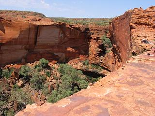 Om 05 uur vertrokken voor het eerste deel van de tweedaagse tour door het centrum van Australie. De eerste dag hebben we de circa 400 km lange tocht naar Yalara gemaakt en onderweg een drie uur lange wandeling door Kings Canyon gemaakt, waarbij iedereen de top van "Heart Attack Hill" heeft gehaald. Bij inspanning ging er wel een liter water per uur doorheen...Aan het eind van de dag genoten van de zonsondergang over de Olgas. |
17 Oktober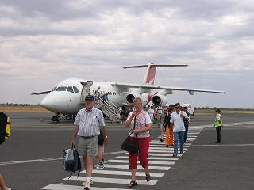 Na het ontbijt maar weer eens in een vliegtuig gestapt, dit keer naar Alice Springs. Bij aankomst was het daar maar liefst 40 graden met een vrij stevige wind. Dit voelde aan als een fohn op die in je gezicht blaast. Zelfs metalen objecten (zoals lantaarnpalen) die in de schaduw stonden voelden heet aan. Een heel bijzondere ervaring. |
14 October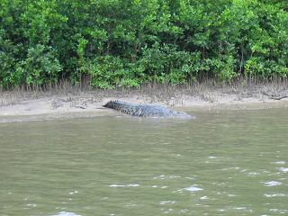 Dan nu maar eens iets echt avontuurlijks: een Daihatsu Cuore (jawel!) gehuurd en naar Cape Tribulation, de plaats waar het vaste land en het Great Barrier Reef bij elkaar komen, gereden. Het tropisch regenwoud deed zijn naam vandaag eer aan en het was behoorlijk vochtig. Op de terugweg nog een cruise over de Daintree River gedaan en zelfs een paar krokodillen in het wild gezien. |
13 October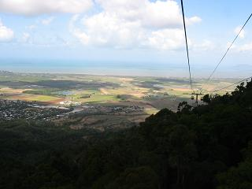 Met de trein naar Kuranda geweest en met de 7.5 km lange kabelbaan weer terug. Het dorpje was niet bijzonder (vooral veel prullaria), maar vanuit de Skyrail was het uitzicht over het regenwoud erg bijzonder. |
12 October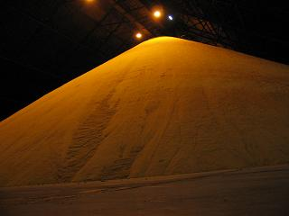 Een prive rondleiding door de suiker overslag terminal van Cairns gehad. Suikerriet is de grote industrie hier in de regio, en dit is waar de suiker wordt opgeslagen en verscheept. Helaas geen indicatie voor de schaal op de foto, maar het was een enorme hal... |
11 October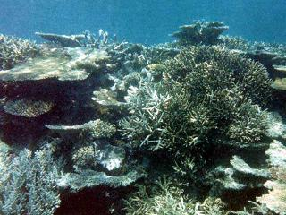 Een van de dingen die echt moet in Cairns is duiken bij het Great Barrier Reef. Ik heb een introductie cursus gedaan vanaf een groot ponton aan de rand van het rif (ca 70 km vanuit de kust). Het was een goeie ervaring, maar de onderwaterwereld is bij lange na niet zo kleurrijk als folders en tv je willen doen geloven en ik weet waarom: er worden filters gebruikt om de kleuren wat te accentueren.Ik had geen onderwatercamera, dus heb ik deze foto maar ergens van het internet gehaald om toch een idee te geven. |
10 October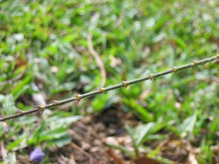 Nog wat bushwalking vandaag.Op de foto is een zogenaamde "wait-a-while" te zien. Dit soort takken met weerhaakjes hangen overal omlaag vanuit de bomen. Wanneer je eraan blijft hangen moet je even achteruit lopen om weer los te komen. Vandaar de naam. |
9 October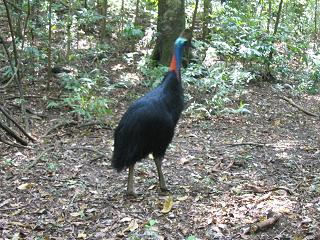 Rondgeleid door de tropische bossen van de "Atherton Tablelands", waar we in de ochtend al een "Death Adder" tegenkwamen die lag te zonnen op ons pad.In de middag ook nog een heel erg zeldzame niet-vliegende vogel, een "Cassowary", van heel dichtbij kunnen zien. Vanaf de foto is het niet erg duidelijk, maar deze vogel is ongeveer twee meter hoog. Hij heeft enorm krachtige poten die je niet tegen wilt komen... Het dier is schitterend om te zien. |
8 October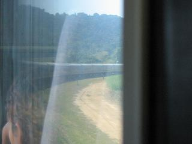 Een heel lange dag die al om 01.45 begon. Op dat heerlijke tijdstip vertrok de Sunlander trein vanuit Mackay, om om 16.00 uur ongeveer duizend km verder in Cairns aan te komen. Dit is zonder twijfel de laangzaamste treinreis die ik ooit heb meegemaakt. Grote delen van de reis gingen op een geschatte snelheid van 40 km/h. Dat gaf wel een mooie gelegenheid om fotos te maken en dat heb ik dan maar gedaan. |
7 October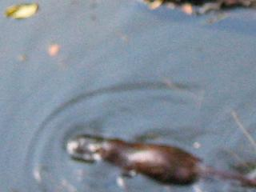 Met "Jungle Johno" een dagtocht gedaan naar de "Finch Hatton Gorge" en "Eungella National Park". De gids was erg goed en wist bijvoorbeeld te vertellen dat een steek van de "Gympy-Gympy" plant bij veel mensen een hartaanval veroorzaakt en er geen pijnstillers voor zijn. Hoe mooi en groot het blad ook, toch maar niet gebruiken als het wc-papier op is...Aan het eind van de dag is het gelukt om de beroemde Platypus (Vogelbekdier) te spotten. Helaas een onscherpe foto, maar er was niet veel tijd om die te nemen want het ding is razendsnel. |
6 October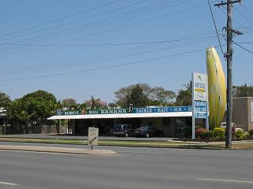 Op de fiets Mackay verkend en tot mijn grote verbazing deze grote banaan tegengekomen. Het is een imitatie van de echte grote banaan, maar toch een foto waard. |
5 October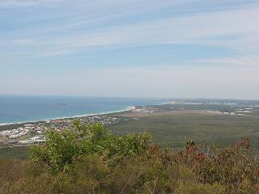 In de vroege morgen Mt Coolum beklommen, de op een na hoogste monoliet (na Uluru) van Australie. Het was een steile en warme klim, maar het uitzicht was dat meer dan waard.In de avond in een JetStar Boeing 717 van Brisbane naar Mackay gevlogen. |
4 October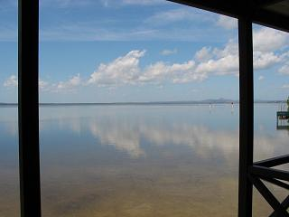 Alweer vroeg vertrokken en wezen kanoen op Lake Cootharoba. Het meer (onderdeel van de Noosa River) was vlak als een spiegel en soms zo ondiep dat we uit moesten stappen en een stuk lopen. Een warme dag vandaag en we waren blij dat we om twaalf uur weer terug waren bij de verhuur. De rest van de dag nog wat auto sightseeing gedaan.Dit was alweer de laatste hele dag aan de Sunshine Coast. Morgen op naar Mackay. |
3 October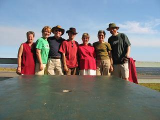 Vandaag dan de kennismaking met de rest van de familie hier. We hebben een heerlijke barbecue gehouden in een park, gewandeld door het regenwoud, cricket gespeeld en een boel gepraat.Het was erg gezellig en de dag vloog om. |
2 October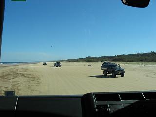 Om vijf uur opgestaan en vertrokken voor een dagtocht naar Fraser Island, het grootste eiland wat volledig uit zand bestaat. De rit in een 4WD touringcar over het strand en door de mulle paden van het eiland was behoorlijk ruig (de voertuigen zijn er in vier jaar afgeschreven), maar het was bijzonder interessant. Het strand op Fraser Island is naast gewoon strand ook een snelweg en een landingsbaan voor vliegtuigen... Omdat er geen stenen op het eiland bestaan kun je het water in de rivieren met witte bodem niet horen stromen.Op de terugweg van de zonsondergang genoten op Rainbow Beach, waar het zand bijna alle kleuren van de regenboog heeft. |
1 October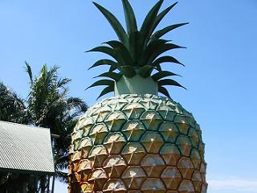 The Big Pineapple, een ananasplantage bezocht. Eindelijk weet ik waarom die altijd wegrotten als je de top plant: die moet eerst zes weken drogen.Na een overheerlijke lunch de wetlands van Bli Bli bezocht, die natuurlijk behoorlijk droog waren. Gelukkig stond daardoor de "mozzie meter" wel laag. |
30 September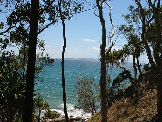 Vandaag Noosa National Park bezocht, waar ze koalas zouden moeten hebben. Helaas hebben we die niet gezien, maar wel een Monitor Lizard, een hele grote (1 m.) hagedis, die rustig door de varens kroop. Helaas was die te ver weg voor een foto.Verder het erg mooie strand van Mooloobala Beach bekeken. |
29 September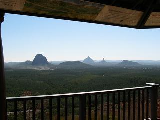 Door famile opgehaald en naar hun huis aan de Sunshine Coast (100 km ten noorden van Brisbane) gebracht. Onderweg gestopt en van het schitterende uitzicht over de Glasshouse Mountians en Moreton Island genoten vanaf White Horse Lookout. Moet nog wel even aan de 30 graden hier wennen, vooral tijdens het klimmen naar de top... |
28 September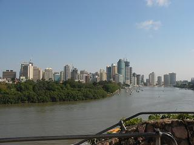 Na een nacht met weinig slaap maar wel een schitterende zonsopgang in de trein dan eindelijk aangekomen in Brisbane, waar ik al opgewacht werd.De rest van de dag ben ik rondgeleid door Brisbane en door Surfers Paradise aan de Gold Coast, een volgebouwde badplaats. |
27 September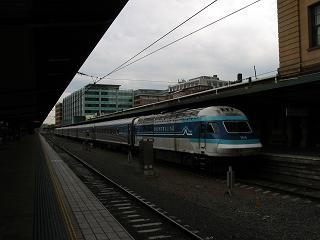 Nu dan het eerste stuk van de lange treinreis van Sydney naar Brisbane (14 uur, 1000 km). Dit is de trein die me erheen gebracht heeft voor vertrek op een bewolkte dag (maar wel 28 graden) in Sydney. |
26 September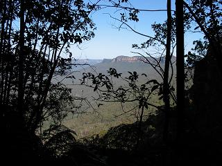 Na de reis van gisteren nu dan de eerste vakantiedag vanuit Katoomba in de Blue Mountains. In het dal hier groeit een heus (gematigd) regenwoud. Het net Burgers Bush, maar dan zo groot dat je er zere voeten van krijgt. Omdat de kliffen zo steil zijn hebben ze er trappen aangelegd zodat je omlaag en omhoog kunt komen. Op een dag heb ik nog nooit zoveel trappen gelopen, maar het was schitterend.In de avond ook nog even de beroemde "Three Sisters" bekeken om het bezoek compleet te maken. |
23 September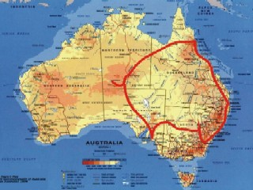 Nog een dag backupppen en het buro opruimen op het werk en dan zit de stage er alweer op. Zaterdag vertrek ik voor een tocht van vijf weken door Australie. Grofweg zal ik de volgende route af gaan leggen, voor het grootste deel met de trein en sommige stukken met het vliegtuig:Canberra - Katoomba (Blue Mountains), - Brisbane, - Sunshine Coast, - Mackay (Eungella National Park), - Cairns, - Alice Springs (Uluru, Olgas, Kings Canion), - Adelaide - Broken Hill (Ghan en Indian Pacific treinen), - Dubbo, - Canberra, - Sydney, - Tokyo, - Schiphol. De totale afstand in Australie zelf zal ergens tussen de 7000 en 8000 km zijn. Een heel eind, maar ik heb er zin in. Ik heb geen idee of ik veel in de gelegenheid zal zijn om de weblog te updaten, maar af en toe zal het wel lukken denk ik. |
19 September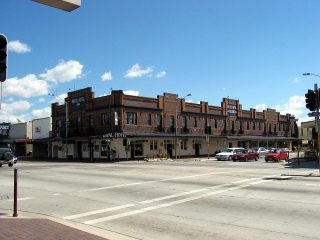 De laatste vrije dag van mijn verblijf hier. Queenbeyan, een plattelandsstadje hier in de buurt had ik nog niet gezien, dus daar vandaag maar eens heen gefietst. Dit was weer typisch zo'n stadje wat uit een film weggelopen kon zijn. Het weer was ook nog eens schitterend. Een beter laatst weekend kon ik me niet wensen. |
18 September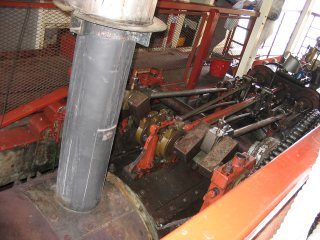 Omdat het praktisch in de achtertuin was en gratis, heb ik vandaag de floriade die hier nu bezig is bezocht. Het was een behoorlijk smaakloze verzameling van half verdroogde bloemen. Een ding was wel leuk: Een 19e eeuwse stoomboot. Het ding was al twee keer gezonken, maar vrijwilligers hebben haar weer gerepareerd. Geweldig, zo'n grote motor die het ook nog doet... |
17 September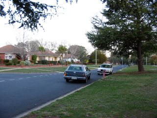 Na een aantal weken is het dan eindelijk gelukt om de auto te verkopen. Hier vertrekt de nieuwe eigenaar ermee. Alles is nu geregeld voor mijn vertrek op de 25e. |
14 September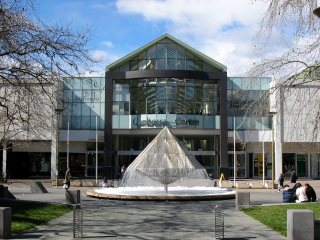 Hoewel het leven helemaal niet saai is, is de weblog dat wel een beetje de laatste tijd. Er moeten een boel dingen geregeld worden. Zo hebben we hospiteerdagen gehad voor mijn kamer en inmiddels een nieuwe bewoner gevonden. Verder was het weer de laatste twee weken slecht, dus heb ik eigenlijk weinig kunnen ondernemen. Gelukkig schijnt sinds gisteren de zon weer. Nog anderhalve week tot mijn vertrek uit Canberra. Alles is geboekt, en binnenkort volgt er een overzicht van de reis die ik ga maken. Wie weet komen er dus binnenkort wat mooie foto's bij... |
4 September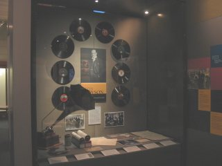 Een weekend met wat regen en mist. Daarom deze keer maar eens een museum bezocht: ScreenSound Australia, het nationale beeld en geluidsarchief. Veel oude films en radio onderwerpen. |